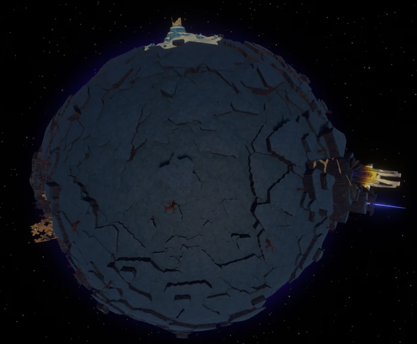
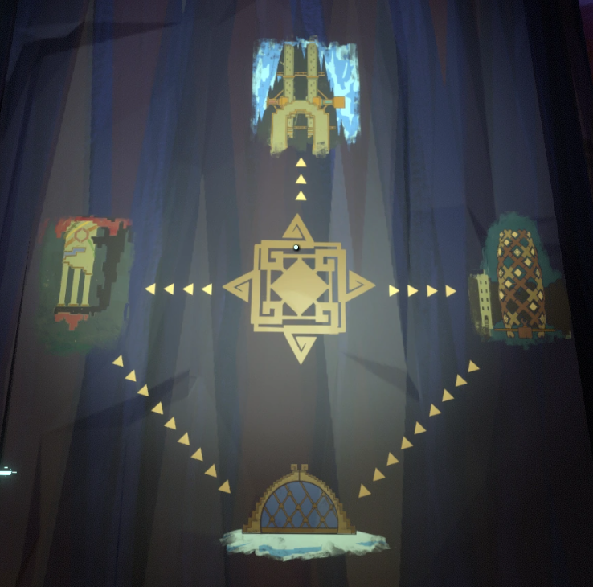
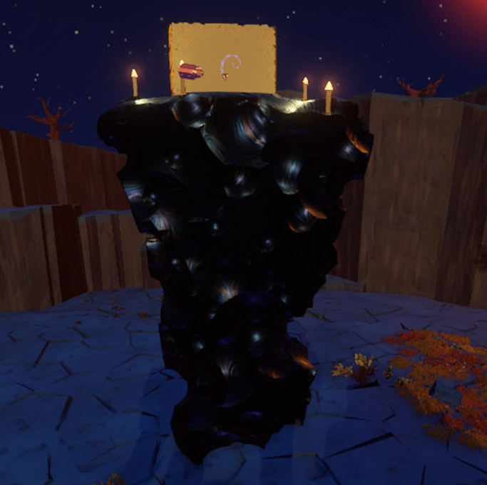

El tercer planeta de nuestro sistema, Es un planeta totalmente inestable el cual se fue creando alrededor del hoyo negro que habita dentro del mismo. Se pueden ver cantidades grandes del mismo caer a el hoyo en muchas ocasiones.
Muchas estructuras construidas por los Nomai pueden ser vistas dentro de este planeta, la totalidad de estas no ha sido investigada, y aun se intenta descubrir mas de las mismas. Varios murales que funcionan como mapas han sido descubiertos.
Una de aquellas extrañas rocas "vivientes" que hemos visto en demas planetas del sistema (Incluido el nuestro!) puede ser encontrada cerca de una de las estructuras de Brittle Hollow. En este momento seguimos intentando descubrir el como funcionan!


